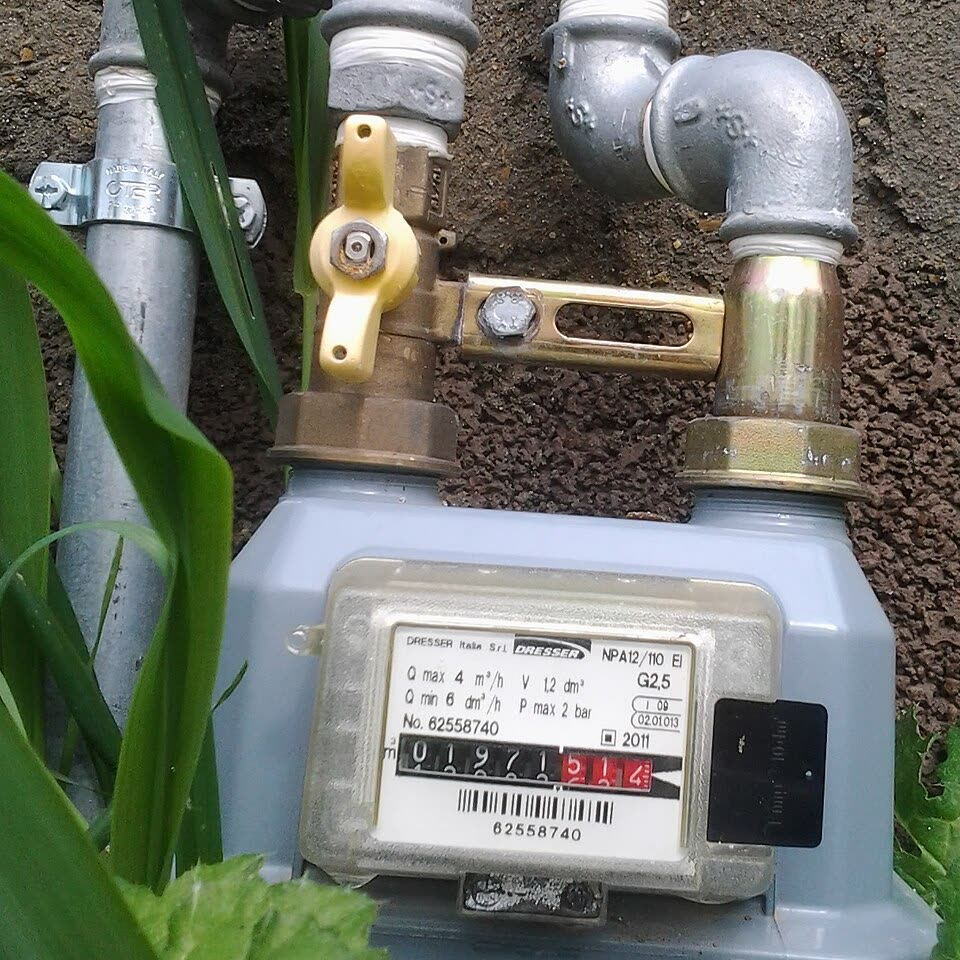

06.11.2026Il coro regge a metà
Foto: Tara17 tara17, CC BY-SA 4.0
Il gasolio è sceso dopo il G7 e nella settimana dell'annuncio, prima che partisse una nave; poi è risalito e lo copre lo sconto. Per l'Italia contava che Trump non chiudesse l'export verso l'Europa, e il pieno si decide a Roma: lo sconto non finisca sabato.
05.11.2026
Londra fa bene ad alzare poco e a dire quando si ferma; il 17 dicembre tocca alla BCE, e con l'inflazione italiana al 5,6% restare ferma costa a chi ha meno.

03.11.2026
Il gas all'ingrosso costa il 24% meno del dicembre 2022, il resto lo fanno oneri e IVA (conti nostri su dati Arera): niente sconti in deficit, lo Stato restituisca l'IVA dei rincari con l'aliquota al 10% coperta da tagli, e aiuti solo chi è povero.
 02.11.2026
02.11.2026
Lo sconto sul bollo diventa permanente, quello sull'Irpef dura un anno: le tasse in busta paga andavano tagliate per tutti e per sempre.
 02.11.2026
02.11.2026
Il Reddito 2.0 del M5S non dice quanto costa e i numeri di Conte non reggono o non hanno fonte; ma l'Assegno del governo sceglie per categoria, senza verificare chi può lavorare.